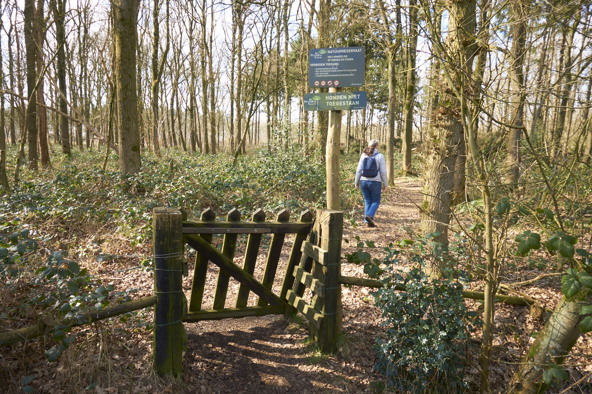
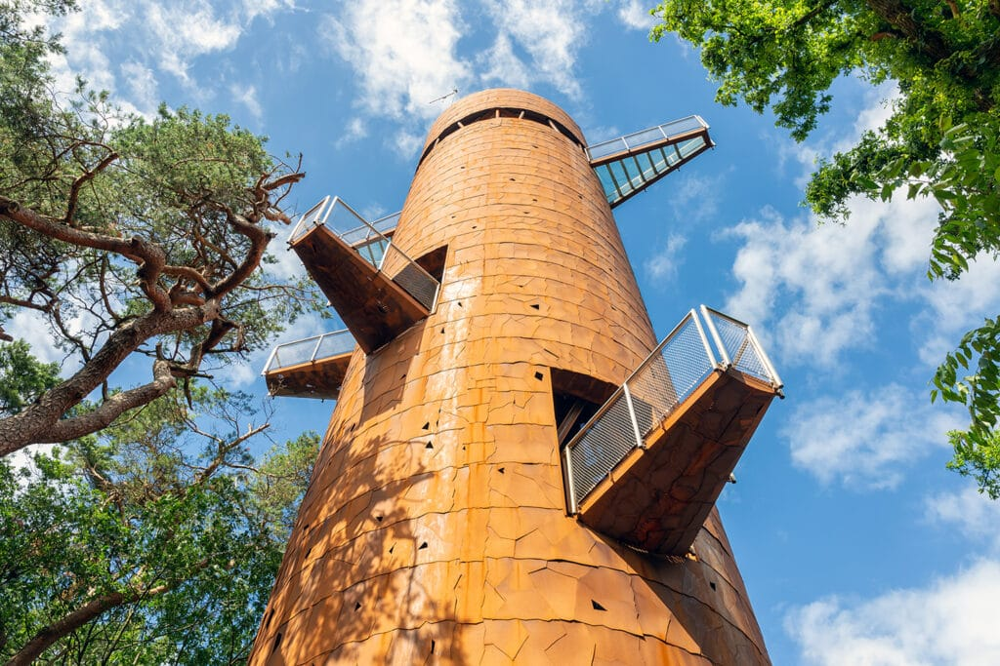

Natuur, activiteiten en voorzieningen in de buurt
De omgeving van Hoornsterzwaag biedt een perfecte mix van rust en beleving. Van uitgestrekte natuurgebieden tot gezellige restaurants en musea — er is altijd iets te ontdekken.
Klik op een naam om direct naar de website of locatie te gaan.


Op slechts 20 minuten rijden staat de Bosbergtoren in Appelscha — een van de mooiste uitkijkpunten van Drenthe en Friesland. Een aanrader voor wie wil genieten van het wijdse Friese landschap vanuit de hoogte.